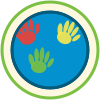
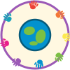
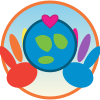

Supportive

Large
Medium
Favicon
Version 1: Hands Holding Up
Two child handprints holding up the world from below. Symbolizes support and care.
Simple
Clear at small sizes
Supportive gesture
Community

Large
Medium
Favicon
Version 2: Reaching Together
Four colorful handprints reaching toward the globe from all corners. Represents community coming together.
Inclusive
Colorful
Dynamic
Connection

Large
Medium
Favicon
Version 3: Touched by Many
Handprints directly ON the globe surface — like kids painted their hands and pressed them on the world!
Artistic
Painted look
Personal touch
Rainbow Ring

Large
Medium
Favicon
Version 4: Circle of Hands
Eight rainbow handprints forming a protective circle around a centered globe. Unity and diversity!
Rainbow spectrum
Unity
Protective
Love

Large
Medium
Favicon
Version 5: Cradled with Love
Two hands gently cradling the world from below, with a heart floating above. Warmth, love, and protection.
Heart symbol
Nurturing
Warm colors